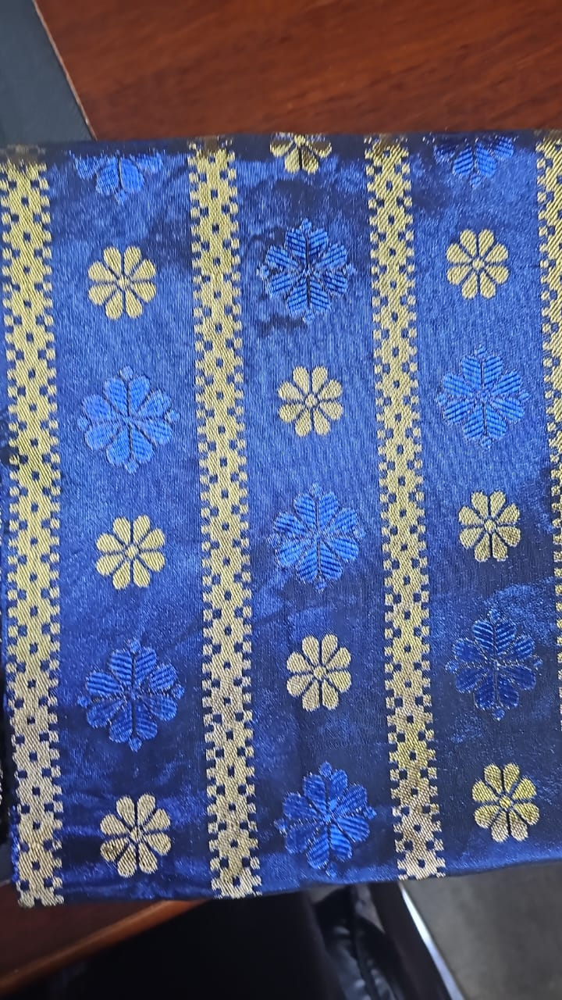
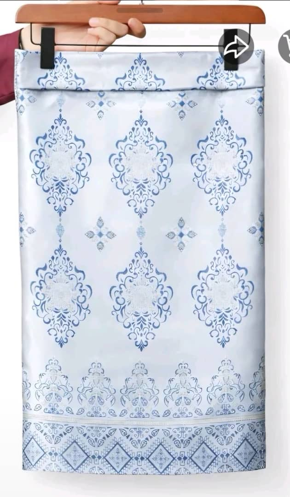
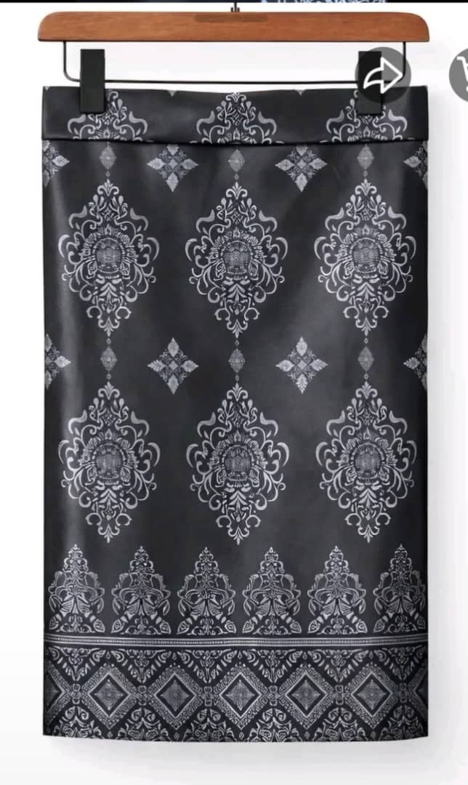
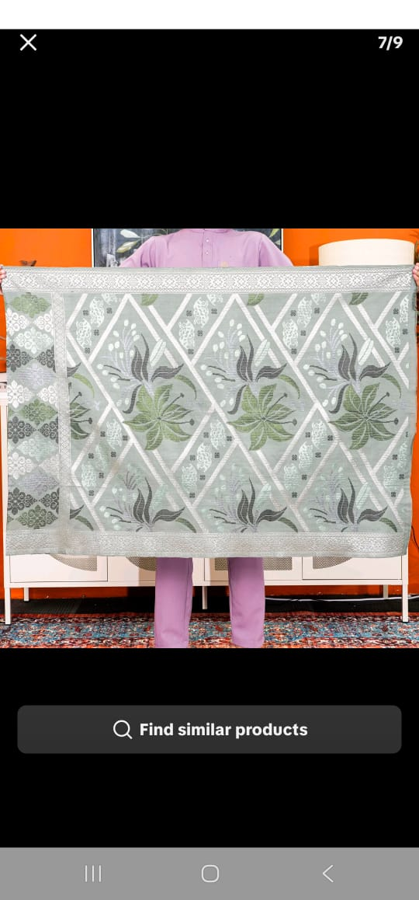
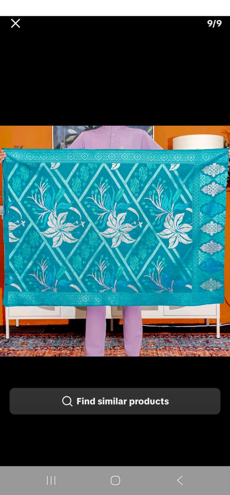
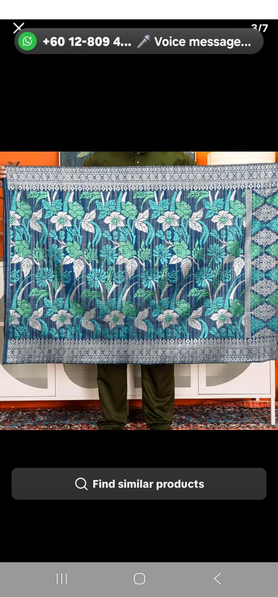
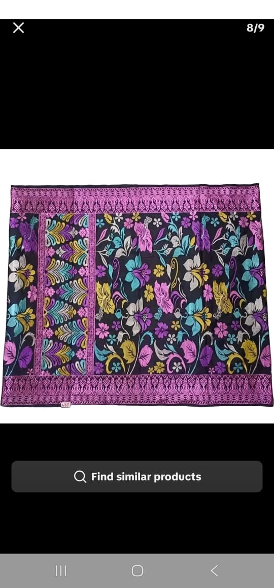
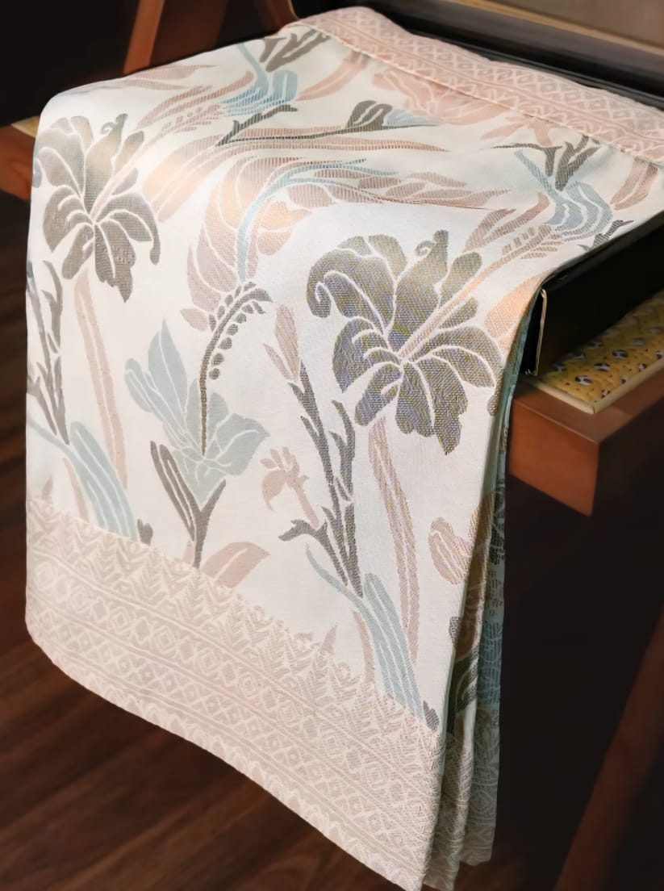

K.K. INTERNATIONAL · PAKISTAN MANUFACTURING
Samping & Songket
Original photographs of Samping and Songket textiles manufactured by K.K. International in Pakistan.
K.K. International’s manufacturing facility in Pakistan produces Samping and Songket textile designs for wholesale and export enquiries. Explore a selection of original product photographs showing the variety of colours, patterns and finishes in our collection.








Photographs supplied by K.K. International. Product specifications, available designs, order quantities and delivery arrangements are confirmed directly for each enquiry.
TEXTILE ENQUIRIES